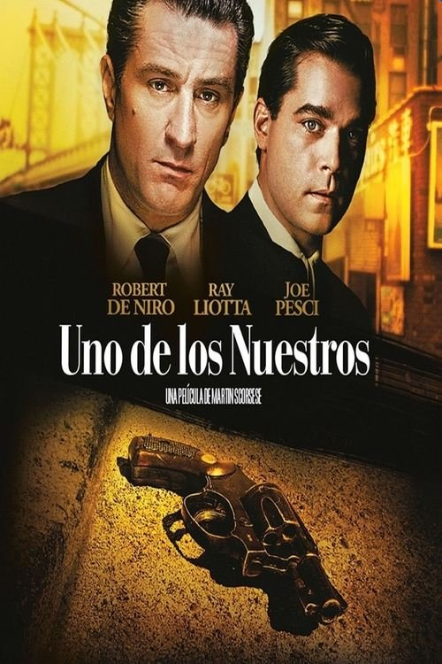

Uno de los nuestros (1990)
Sinopsis Rápida
Un joven agente del FBI se infiltra en la mafia italiana de Nueva York, sumergiéndose en un mundo de traición, violencia y lealtad cuestionable. ¿Podrá sobrevivir a la prueba definitiva o sucumbirá a la oscuridad que lo rodea?
Sinopsis Detallada
Uno de los nuestros sigue la peligrosa misión de Joseph Pistone, un agente encubierto que se hace pasar por un mafioso para desmantelar una poderosa familia criminal. La película retrata la tensión constante, el riesgo mortal y el profundo impacto psicológico que la infiltración tiene en Pistone. Además de la acción y el suspense, la cinta explora temas de identidad, traición y la moralidad ambigua en el mundo del crimen organizado. La actuación magistral de Robert De Niro y el realismo crudo de la narrativa hacen de esta una película inolvidable.
¿Por qué tenés que verla?
- Una historia real llena de suspense y giros inesperados que te mantendrá al borde de tu asiento.
- La impecable actuación de Robert De Niro como mafioso y la tensión palpable creada por la dirección.
- Su impacto en la cultura popular, representando una visión realista y cruda del mundo del crimen organizado.
- Excelente ejemplo de cine de género que combina acción, drama y suspense.
Idea Extra
Comparación de la película con casos reales de infiltración en la mafia y su precisión histórica.